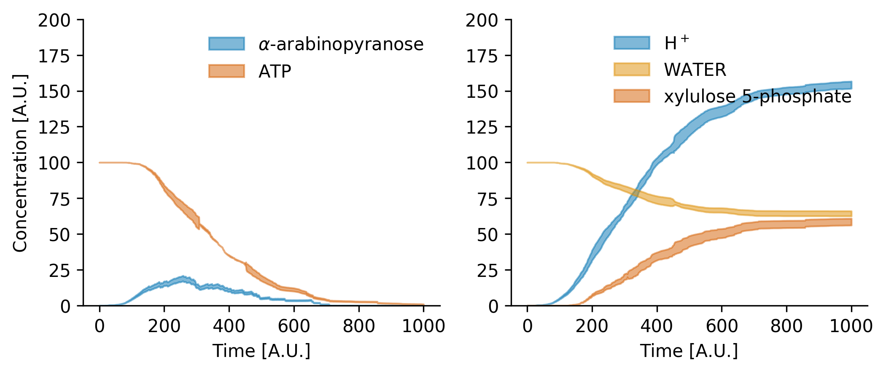

Plotting¶
PySB could inform the results of a simulation to dataframes (See
Simulation) and visualization of results could be done with
matplotlib or seaborn even (See more here). To
access the data, the dataframes columns reproduce the names of the Observables.
The following example could be adapted to show the dynamics of any Observable.
Importantly, PySB allows the inspection of the model to find which
Monomers (and complexes of monomers) exists in the model, but as the
simulation is network-free, the possible formed complexes are up to the user
concern.
Atlas produces automatically Observables for metabolites, and other
components and complexes could also be observed and plotted, but their
declaration in the model is entirely up to the user.
fig, ax = plt.subplots(1, 2, figsize = (4*2, 3*1), dpi = 100)
# ax[0].plot(data1.index, data1[‘obs_alpha_L_arabinopyranose_cyt’], label = ‘__NOLABEL__’, color = palette[0]) # ax[0].plot(data1.index, data1[‘obs_ATP_cyt’], label = ‘__NOLABEL__’, color = palette[3]) ax[0].fill_between(avrg.index, avrg[‘obs_alpha_L_arabinopyranose_cyt’] + stdv[‘obs_alpha_L_arabinopyranose_cyt’], avrg[‘obs_alpha_L_arabinopyranose_cyt’] - stdv[‘obs_alpha_L_arabinopyranose_cyt’], label = r’$alpha$-arabinopyranose’, **{‘color’ : palette[0], ‘alpha’ : 0.5}) ax[0].fill_between(avrg.index, avrg[‘obs_ATP_cyt’] + stdv[‘obs_ATP_cyt’], avrg[‘obs_ATP_cyt’] - stdv[‘obs_ATP_cyt’], label = r’ATP’, **{‘color’ : palette[3], ‘alpha’ : 0.5})
# ax[1].plot(data1.index, data1[‘obs_PROTON_cyt’], label = ‘__NOLABEL__’, color = palette[0]) # ax[1].plot(data1.index, data1[‘obs_XYLULOSE_5_PHOSPHATE_cyt’], label = ‘__NOLABEL__’, color = palette[3]) ax[1].fill_between(avrg.index, avrg[‘obs_PROTON_cyt’] + stdv[‘obs_PROTON_cyt’], avrg[‘obs_PROTON_cyt’] - stdv[‘obs_PROTON_cyt’], label = r’H$^+$’, **{‘color’ : palette[0], ‘alpha’ : 0.5}) ax[1].fill_between(avrg.index, avrg[‘obs_WATER_cyt’] + stdv[‘obs_WATER_cyt’], avrg[‘obs_WATER_cyt’] - stdv[‘obs_WATER_cyt’], label = ‘WATER’, **{‘color’ : palette[1], ‘alpha’ : 0.5}) ax[1].fill_between(avrg.index, avrg[‘obs_XYLULOSE_5_PHOSPHATE_cyt’] + stdv[‘obs_XYLULOSE_5_PHOSPHATE_cyt’], avrg[‘obs_XYLULOSE_5_PHOSPHATE_cyt’] - stdv[‘obs_XYLULOSE_5_PHOSPHATE_cyt’], label = r’xylulose 5-phosphate’, **{‘color’ : palette[3], ‘alpha’ : 0.5})
ax[0].set_xlabel(‘Time [A.U.]’) ax[0].set_ylabel(‘Concentration [A.U.]’) # ax[0].set_xlim(left = 0, right = 100) ax[0].set_ylim(bottom = 0, top = 200)
ax[1].set_xlabel(‘Time [A.U.]’) # ax[1].set_xlim(left = 0, right = 100) ax[1].set_ylim(bottom = 0, top = 200)
ax[0].legend(frameon = False) ax[1].legend(frameon = False)
seaborn.despine() plt.savefig(‘Fig_Arabinose.png’, format = ‘png’, bbox_inches = ‘tight’, dpi = 350) # for publication # plt.savefig(‘Fig_Arabinose.pdf’, format = ‘pdf’, bbox_inches = ‘tight’, dpi = 350)
plt.show()
And the results is
See the Arabinose Model to inspect the rules and reproduce (at some extent because of stochasticity) the plot showed in this Manual.